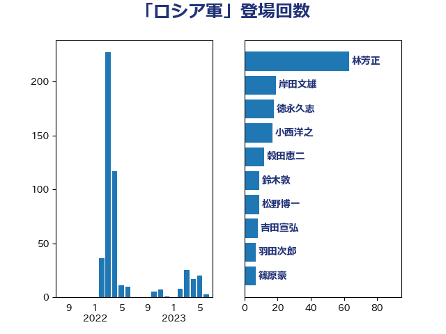

単語「ロシア軍」

| 林芳正 | 自由民主党 | 63 回 |
| 岸田文雄 | 自由民主党 | 19 回 |
| 徳永久志 | 無所属 | 18 回 |
| 小西洋之 | 立憲民主党 | 17 回 |
| 穀田恵二 | 日本共産党 | 12 回 |
| 鈴木敦 | 国民民主党 | 9 回 |
| 松野博一 | 自由民主党 | 9 回 |
| 吉田宣弘 | 公明党 | 8 回 |
| 羽田次郎 | 立憲民主党 | 7 回 |
| 篠原豪 | 立憲民主党 | 7 回 |
| 斎藤アレックス | 国民民主党 | 7 回 |
| 山崎誠 | 立憲民主党 | 7 回 |
| 鈴木庸介 | 立憲民主党 | 6 回 |
| 音喜多駿 | 日本維新の会 | 5 回 |
| 萩生田光一 | 自由民主党 | 5 回 |
| 石井章 | 日本維新の会 | 5 回 |
| 榛葉賀津也 | 国民民主党 | 5 回 |
| 杉久武 | 公明党 | 4 回 |
| 勝部賢志 | 立憲民主党 | 4 回 |
| 伊波洋一 | 無所属 | 4 回 |
| 鬼木誠 | 立憲民主党 | 3 回 |
| 酒井庸行 | 自由民主党 | 3 回 |
| 芳賀道也 | 国民民主党 | 3 回 |
| 石川昭政 | 自由民主党 | 3 回 |
| 石川博崇 | 公明党 | 3 回 |
| 田島麻衣子 | 立憲民主党 | 3 回 |
| 片山大介 | 日本維新の会 | 3 回 |
| 熊谷裕人 | 立憲民主党 | 3 回 |
| 渡辺周 | 立憲民主党 | 3 回 |
| 浅田均 | 日本維新の会 | 3 回 |
| 武見敬三 | 自由民主党 | 3 回 |
| 東徹 | 日本維新の会 | 3 回 |
| 新垣邦男 | 立憲民主党 | 3 回 |
| 山添拓 | 日本共産党 | 3 回 |
| 坂本祐之輔 | 立憲民主党 | 3 回 |
| 高橋光男 | 公明党 | 2 回 |
| 青木愛 | 立憲民主党 | 2 回 |
| 鎌田さゆり | 立憲民主党 | 2 回 |
| 紙智子 | 日本共産党 | 2 回 |
| 空本誠喜 | 日本維新の会 | 2 回 |
| 稲津久 | 公明党 | 2 回 |
| 福岡資麿 | 自由民主党 | 2 回 |
| 田村智子 | 日本共産党 | 2 回 |
| 猪口邦子 | 自由民主党 | 2 回 |
| 清水真人 | 自由民主党 | 2 回 |
| 浅野哲 | 国民民主党 | 2 回 |
| 河西宏一 | 公明党 | 2 回 |
| 森本真治 | 立憲民主党 | 2 回 |
| 杉尾秀哉 | 立憲民主党 | 2 回 |
| 本村伸子 | 日本共産党 | 2 回 |
| 掘井健智 | 日本維新の会 | 2 回 |
| 工藤彰三 | 自由民主党 | 2 回 |
| 岩本剛人 | 自由民主党 | 2 回 |
| 山本順三 | 自由民主党 | 2 回 |
| 山口俊一 | 自由民主党 | 2 回 |
| 小野田紀美 | 自由民主党 | 2 回 |
| 小森卓郎 | 自由民主党 | 2 回 |
| 大塚耕平 | 国民民主党 | 2 回 |
| 堤かなめ | 立憲民主党 | 2 回 |
| 和田政宗 | 自由民主党 | 2 回 |
| 井上哲士 | 日本共産党 | 2 回 |
| 上田清司 | 国民民主党 | 2 回 |
| 高良鉄美 | 無所属 | 1 回 |
| 高木啓 | 自由民主党 | 1 回 |
| 青柳仁士 | 日本維新の会 | 1 回 |
| 青木一彦 | 自由民主党 | 1 回 |
| 青山繁晴 | 自由民主党 | 1 回 |
| 阿部知子 | 立憲民主党 | 1 回 |
| 阿部弘樹 | 日本維新の会 | 1 回 |
| 鈴木貴子 | 自由民主党 | 1 回 |
| 鈴木俊一 | 自由民主党 | 1 回 |
| 金子恵美 | 立憲民主党 | 1 回 |
| 道下大樹 | 立憲民主党 | 1 回 |
| 谷合正明 | 公明党 | 1 回 |
| 角田秀穂 | 公明党 | 1 回 |
| 蓮舫 | 立憲民主党 | 1 回 |
| 菅直人 | 立憲民主党 | 1 回 |
| 荒井優 | 立憲民主党 | 1 回 |
| 美延映夫 | 日本維新の会 | 1 回 |
| 緒方林太郎 | 無所属 | 1 回 |
| 竹内譲 | 公明党 | 1 回 |
| 秋野公造 | 公明党 | 1 回 |
| 礒崎哲史 | 国民民主党 | 1 回 |
| 石川大我 | 立憲民主党 | 1 回 |
| 石垣のりこ | 立憲民主党 | 1 回 |
| 石井正弘 | 自由民主党 | 1 回 |
| 田村貴昭 | 日本共産党 | 1 回 |
| 猪瀬直樹 | 日本維新の会 | 1 回 |
| 滝波宏文 | 自由民主党 | 1 回 |
| 浜田靖一 | 自由民主党 | 1 回 |
| 浜口誠 | 国民民主党 | 1 回 |
| 永井学 | 自由民主党 | 1 回 |
| 比嘉奈津美 | 自由民主党 | 1 回 |
| 櫻井周 | 立憲民主党 | 1 回 |
| 森屋隆 | 立憲民主党 | 1 回 |
| 梅谷守 | 立憲民主党 | 1 回 |
| 松川るい | 自由民主党 | 1 回 |
| 本庄知史 | 立憲民主党 | 1 回 |
| 末松義規 | 立憲民主党 | 1 回 |
| 平木大作 | 公明党 | 1 回 |
| 島尻安伊子 | 自由民主党 | 1 回 |
| 山本左近 | 自由民主党 | 1 回 |
| 山本太郎 | れいわ新選組 | 1 回 |
| 小野寺五典 | 自由民主党 | 1 回 |
| 小田原潔 | 自由民主党 | 1 回 |
| 宮口治子 | 立憲民主党 | 1 回 |
| 室井邦彦 | 日本維新の会 | 1 回 |
| 奥野総一郎 | 立憲民主党 | 1 回 |
| 大塚拓 | 自由民主党 | 1 回 |
| 城内実 | 自由民主党 | 1 回 |
| 嘉田由紀子 | 無所属 | 1 回 |
| 古賀之士 | 立憲民主党 | 1 回 |
| 加田裕之 | 自由民主党 | 1 回 |
| 佐藤正久 | 自由民主党 | 1 回 |
| 伊東良孝 | 自由民主党 | 1 回 |
| 中野英幸 | 自由民主党 | 1 回 |
| 中川郁子 | 自由民主党 | 1 回 |
| 中川宏昌 | 公明党 | 1 回 |
| 中島克仁 | 立憲民主党 | 1 回 |
| 三浦信祐 | 公明党 | 1 回 |
| 三木圭恵 | 日本維新の会 | 1 回 |